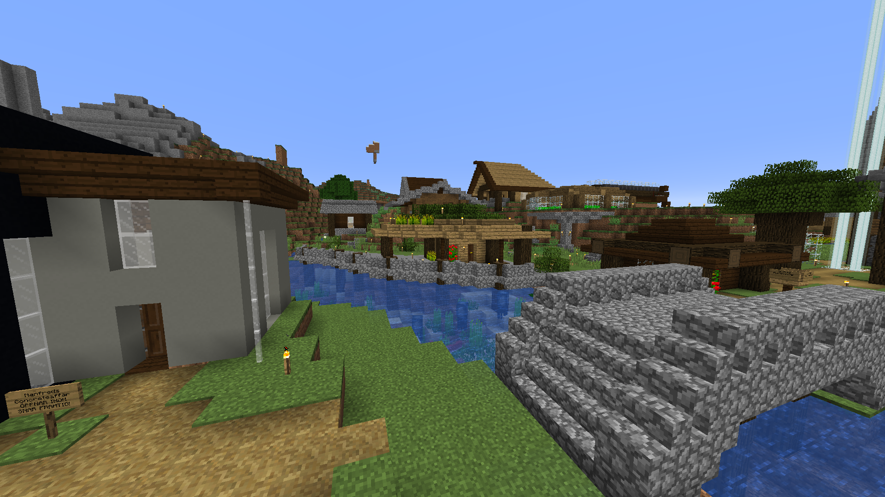

Manfreds hamn

Manfreds hamn var en samling affärer kring hans hamn som låg längs ån som gick genom byn. På ena sidan vattnet hade han en concreteaffär som aldrig öppnades.Manfreds hamn
På andra sidan fanns hans kycklingaffär, som konkurerade med Melkers och Karls kycklingaffärer. Det fanns också ett casino en bit ovanför vattnet där man kunde satsa diamanter och hade man tur vann man tillbaka en del.
Manfred hade också en affär där han sålde böcker som han fick från sin fiskefarm. Han sålde alla böcker för samma pris, en diamant. Hade man tur kunde man hitta ett riktigt kap. Man kan inte säga samma sak om hans second-handaffär, där vem som helst fick komma och ta och ge grejer ur en kista helt fritt.